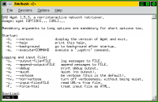
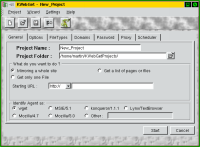

I got some mail after my latest article on HTML editors. Some of them from people talking about an editor called SCREEM. As a matter of fact just after sending off the August article I seemed to recall a listing on Freshmeat about a HTML editor called Screem. So I had already had a look - and it seems very promising. I've included a look at here.
Dmitry Poplavsky from the Quanta team wrote to point out a couple of things: the extended ASCII problem is real. Although not always reproduceble. One solution to this bug he mentions:
Sometimes setting export LC_ALL = <your language> solve problem, but not every time.
Other points are that you can update the preview by hitting F5, which is pretty obvious from looking at the menus but something I missed. What is not as clear - and certainly not as intuitive is the tag@lists.linuxgazette.netpletion feature:
Maybe you'll find ueful feature of quick list of tag attributes (alt+down key, like tag@lists.linuxgazette.netpletion from HomeSite, but still not so smart ;)That is also quite true but hitting ALT+DOWN instead of SPACE is not very well thought out IMHO. Also the function is Quanta is a bit less potent than the one found in SCREEM. (Check out the review of the latter here).
Someone wrote me saying I might enjoy Bluefish in its new incarnation. I just downloaded version 0.5 and the general impression is more. Of everything really. But I still miss the file browsers and tag@lists.linuxgazette.netpletion of other Quanta and SCREEM. There are more wizards, more menus and a new toolbar which is users customizable. At least the form wizard bug has gone away and the other minor things I noticed last time should have been taken care of too. There is new support for WML and the DTD section now includes XHTML. And there are new bugs. Try (for example) this handy trick to shut down your HTML editor: Write a HTML document. Go to the Frames Tab. Click on the Frameset button. Hope you did save first though.
One problem facing me recently was getting one of my sites onto my new home computer. (My old one having gone into retirement as a Windows game box for my 4-year old). The prospect of having to use FTP to transfer all files from the web server was not appetizing. I've done that once and found it slow, and for us unfortunate people with dial-up accounts payable by the minute, costly. The obvious alternative is to find a tool to automate the process. Fortunately there are quite a few such tools around - do a search on web mirror och web site copy on Freshmeat to get an idea of the number of applications.
In a Mandrake 7.1 installation you may have two of these installed. The command line alternative is wget  (1.5.3) which gets a lot of mentions on newsgroups and such fora. I haven't tried it - as I do most of my computing in an X environment. There are a gazillion options to set to tweek its performance to suit your need however, as a screenshot of the --help options shows.
What I have tried however, is Kwebget (0.5) which is a frontend to wget. What is great about Kwebget is  summarized in the help file: "It has nearly the same functionallity, but you still don't have to type such long commandline-arguments. It's main use is to download whole sites to your local harddisk, and to browse them, while you're offline. " This tool would apparently fit the bill nicely. It is designed for use in KDE although running KDE isn't necessary. (KDE must be installed however).
Kwebget comes fitted with a wizard to help you grab a site as painlessly as possible. It is however also possible to run it in "advanced" mode. The most advanced of which is to select which options you wish to specify to the underlaying wget. (Why not call it manual mode rather than use Microsoft-speak?) Anyway. Kwebget is a nice tool for those of us who have not grown up with the Unix command line and still am learning at using and scripting those tools to do approximately what we want them to do. (Recently I finally got a grip on grep ....).
Did it actually prove to be faster than FTP and less costly? Well, at least I think so. It definately is great to just say "go get my site" to Kwebget and it does quite rapidly. The speed increase (at least when dealing with my server) is that there is no pauses when the FTP-server moves into each and every directory to list and get files.
This completes the phase where I've reviewed some HTML-editors. I've also looked at tools to automatically download an entire site onto your own machine. If you feel - these articles are useful and/or have some other tip for future article - drop me a line!
BTW, here is the review of SCREEM again. If you don't want to scroll up all the way to the link.